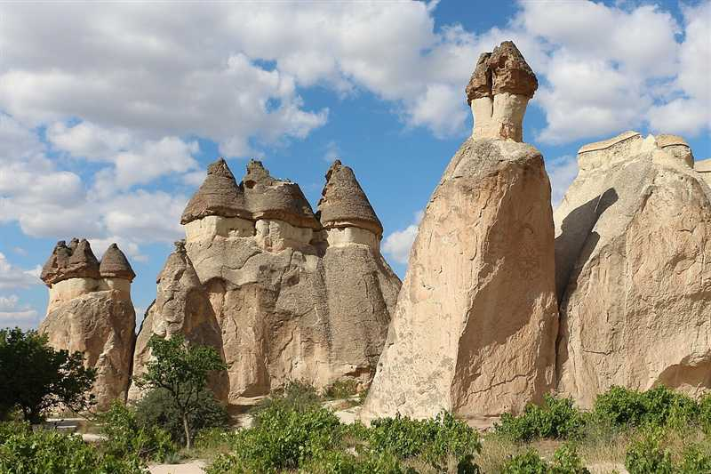
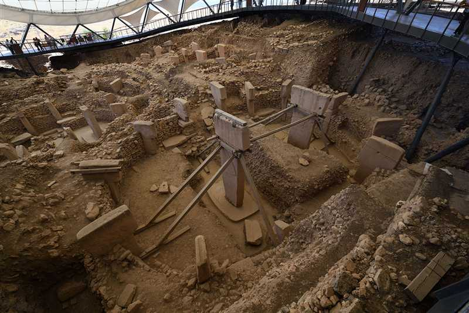
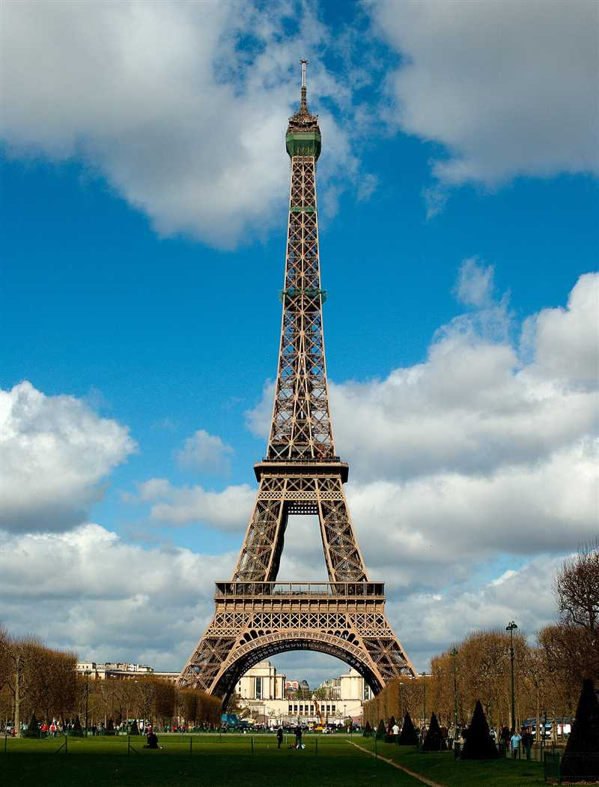

L
Work With LevelsRead · Learn · Explore
Aynı hikâye, sana uygun seviyede.
GEZİ · DOĞA · KÜLTÜR
Dünyayı keşfet,
İngilizceni geliştir.
Aynı metni A1, A2, B1 veya B2 seviyesinde oku; kelimeleri öğren, sorularla kendini dene.
OKUMA KOLEKSİYONU
Keşfet ve oku
Bir konu seç, seviyeni belirle ve keşfetmeye başla.
DOĞA VE TARİH

Cappadocia: A Landscape Carved by TimeA1–B2 · Kelimeler · Mini sorularARKEOLOJİ
Göbekli Tepe: Questions in StoneA1–B2 · Kelimeler · Mini sorularMİMARİ VE BİLİM
The Eiffel Tower: More Than a ViewA1–B2 · Kelimeler · Mini sorularDOĞA HARİKALARIThe Marble Caves of PatagoniaA1–B2 · Kelimeler · Mini sorularCANLILARBees and FlowersA1–B2 · Kelimeler · Mini sorularKÜLTÜR VE TARİHThe Statue of LibertyA1–B2 · Kelimeler · Mini sorularGörsel kaynakları
Kapak fotoğrafları: Pamukkale · Slyronit, CC BY-SA 4.0 · Patagonya · Wescottm, CC BY 4.0 · Arı · MindstormsKid, kamu malı · Özgürlük Heykeli · Tysto, kamu malı
Kapadokya · Bernard Gagnon · CC BY-SA 3.0 (boyutlandırıldı; kapakta kırpılarak gösterilir)
Göbekli Tepe · Dosseman · CC BY-SA 4.0 (boyutlandırıldı; kapakta kırpılarak gösterilir)
Eyfel Kulesi · Thomas Depenbusch · CC BY 2.0 (boyutlandırıldı; kapakta kırpılarak gösterilir)